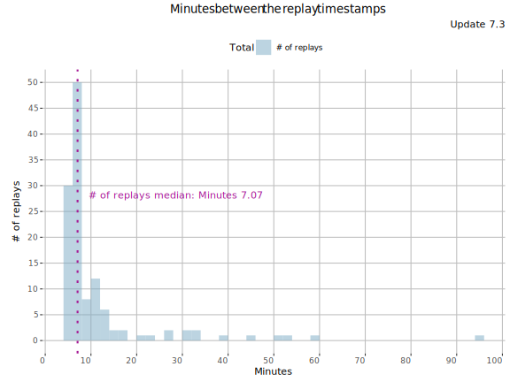
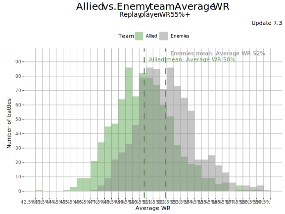
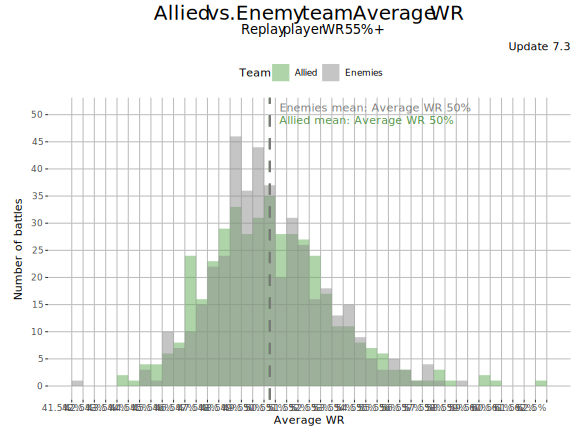

Rigged MM
Now there is evidence (for Mad & Burning Games).
Few weeks back I opened Discord to find out how someone had sent me tens of messages saying he thinks “WG is rigging the Burning Games MM”. I did not know him, and at first I put him into the same category with other countless players accusing “the MM is rigged” - usually without providing any proper evidence.
But this guys was not spamming me with post-battle screenshots, but with screenshots of WoTBot replay analysis showing consistent and large differences between the allied and enemy team average WR. The player said the battles were all consecutive battles and he had posted more than 100 to replays.WoTinspector.com. Wow, “this is different”, I thought and got immediately interested. No one of the “MM whiners” had ever wanted to provide proper data in the form of consecutive & non-cherry-picked replays. I fetched the replays and ran the first analysis with blitz-tools/analyse_wotb_replays.py script:
TOTAL_______________ Battles % Battles WR DPB Spot Top tier Player WR Allies WR Enemies WR Allies Btls Enemies Btls
Total : 134 : 100% : 38.1% : 1603 : 0.5 : 77% : 67% : 49.82% : 51.87% : 16236 : 16645
Player Histograms______
Win rate | Allies | Enemies | TOTAL
0% - 35% | 0 ( 0.0%) | 0 ( 0.0%) | 0 ( 0.0%)
35% - 40% | 6 ( 0.7%) | 4 ( 0.4%) | 10 ( 0.6%)
40% - 45% | 127 (15.8%) | 91 ( 9.7%) | 218 (12.5%)
45% - 48% | 186 (23.1%) | 154 (16.4%) | 340 (19.5%)
48% - 50% | 132 (16.4%) | 148 (15.8%) | 280 (16.1%)
50% - 52% | 117 (14.6%) | 139 (14.8%) | 256 (14.7%)
52% - 55% | 115 (14.3%) | 167 (17.8%) | 282 (16.2%)
55% - 60% | 81 (10.1%) | 128 (13.6%) | 209 (12.0%)
60% - 65% | 32 ( 4.0%) | 70 ( 7.5%) | 102 ( 5.9%)
65% - 70% | 6 ( 0.7%) | 32 ( 3.4%) | 38 ( 2.2%)
70% - | 2 ( 0.2%) | 5 ( 0.5%) | 7 ( 0.4%)
The analysis showed massive 2% difference between the allied and enemy teams’ average WRs. I had never seen anything close to such a massive difference. The distribution of player WR in the allied/enemy teams also showed how the enemy teams got constantly better players (see the graph below). The player was a capable 67% WR (career) player and yet he managed to win only 38.1% of his battles. A bad run? Maybe, but I knew such a large difference in teams average WR was extremely rare.

I then analyzed the replays for any cherry-picking and it was clear that he was speaking the truth. The replays seemed to be from consecutive battles played over few days.

I then published my findings on EU, NA, Asia and RU forums and started encouraging players to submit replays to WoTinspector.com. Burning Games were about to end, but I had a suspicion that the very same MM rigging would continue in Mad Games.
Mad Games
… And it did. After the Mad Games ended, there were 1037 Mad Games replays submitted to WoTinspector.com. The results show how good players were clearly given stronger enemy teams, even the MM should have chosen the players randomly. For 65%+ WR players there was more than 2% difference between the allied/enemy teams’ average WR, and for 55-65% WR there was more than 1% average difference. The stronger-than-normal enemies caused the very good players to lose more than half of their battles. There was only one replay by a 35-45% WR player, but that replay was mirroring the good players destiny. He got carried by his team having nearly 2% average WR advantage.
Mad Games replay analysis
./analyze_wotb_replays.py --mode team --extra total player_wins --only --filters '{ "data.summary.battle_start_timestamp": { "$gte": 1603526400} , "data.summary.room_type": 8 }' db:
Fetching player stats |████████████████████████████████| 12050/12050 100% ETA 0 h 0 mins
TOTAL_______________ Battles % Battles WR Player WR Allies WR Enemies WR
Total 1037 : 100% : 51.3% : 61.45% : 50.56% : 51.85%
Player WR___________ Battles % Battles WR Player WR Allies WR Enemies WR
35 - 45% 1 : 0% : 100.0% : 43.80% : 54.23% : 52.66%
45 - 50% 28 : 3% : 78.6% : 47.41% : 50.65% : 50.52%
50 - 55% 146 : 14% : 55.5% : 52.30% : 51.63% : 51.71%
55 - 65% 508 : 49% : 49.6% : 60.10% : 50.42% : 51.54%
65 - % 354 : 34% : 49.7% : 68.33% : 50.31% : 52.45%
And while 2% average WR difference may seem small, let’s remember that this is a difference between the teams’ averages. In total there is 7 * 2% = 14% total WR point difference between the team equivalent of the enemy team having one extra unicum/super unicum against an average player (e.g. 64% player vs. a 50% player in the allied team). When plotting a histogram of allied & enemy teams’ average WR, it becomes dead-obvious how the MM was not even trying to be random, but was clearly rigged against good players (WR 55%+).

FAQ
Are these some cherry-picked replays?
Very unlikely. Most of these (926 out of 1037) were from players who submitted at least 10 replays, therefore undermining the claim that the replays themselves were somehow cherry-picked extraordinary games.
Could this be just “random variation”
Beyond any reasonable doubt, no. Student’s t-test is a way to test whether two samples come from the same random (normal) distribution (it was originally developed to monitor the consistency of Guinness beer so it must be working). A paired t-test gave extremely small p-value (probability) of 2.2e-16 for (a null hypothesis that) the two samples (allied & enemy team average WRs) are coming from the same random distribution. The probability of 2.2e-16 is extremely low (smaller than winning the main prize in Eurojack pot twice in a row).
Is the player herself counted in?
Please note that the player submitting the replays has not been counted to the allied teams because she has not been selected randomly since we have selected her replay into the data set. When the player itself was added back to the allied team, the average WR difference between the teams for WR 55%+ players changed from -1.54% to +0.3% for the allied team.
What about the impact of platoons?
I did experiment with removing platoons from both the side from the data set, but it did not have any meaningful impact to the results.
This data is therefore a strong evidence that WG has been applying “Skill-Based MatchMaking” (aka “Rigged the MM”) for the special game modes (Burning & Mad Games).
Can skill-based MM work?
I actually do not know. I am 100% certain the skill-based MM WG applied to the Burning & Mad Games will never work (i.e. balancing teams’ WR per battle). It will just make any decent player to suffer from inferior teams.
An MM that splits players into separate leagues and then applies random MM within the league could work, but I doubt Blitz has enough players for such an MM to result decent queuing times. And if the skill-gaps between the leagues are too large, it will lead other types of problems: players whose skill were just above the lower bar of the league would lose lot more than they would do in normal random battles without leagues. There are not easy answers here. It is not possible for everyone to win a lot in PVP games.
Regular Battles are NOT rigged
It is important to understand that so far there has not been any proof of WG rigging MM in Regular Battles. Instead, the data is clearly supporting the notion that Regular Battles are based on random MM within the MM rules (tier/vehicle class matching):
./analyze_wotb_replays.py --mode team --extra total player_wins mastery_badge battle_i --only --filters '{ "$and" : [ {"data.summary.battle_start_timestamp": { "$gte": 1602853200}}, {"data.summary.battle_start_timestamp": { "$lt" : 1604106000}} ] , "data.summary.room_type": 1 }' --min 10 db:
Fetching player stats |████████████████████████████████| 6850/6862 99% ETA 0 h 0 mins
TOTAL_______________ Battles % Battles WR Player WR Allies WR Enemies WR
Total 550 : 100% : 66.9% : 59.28% : 50.15% : 50.07%
Battle Medal________ Battles % Battles WR Player WR Allies WR Enemies WR
- 247 : 45% : 35.2% : 58.40% : 50.20% : 50.61%
3rd Class 121 : 22% : 93.4% : 58.70% : 51.04% : 49.64%
2nd Class 90 : 16% : 93.3% : 59.15% : 50.06% : 49.60%
1st Class 40 : 7% : 90.0% : 59.34% : 49.37% : 49.84%
Mastery 52 : 9% : 92.3% : 64.94% : 48.59% : 49.52%
Player WR___________ Battles % Battles WR Player WR Allies WR Enemies WR
45 - 50% 24 : 4% : 79.2% : 46.17% : 49.88% : 49.55%
50 - 55% 99 : 18% : 55.6% : 52.28% : 49.79% : 49.39%
55 - 65% 342 : 62% : 66.7% : 59.70% : 50.31% : 50.28%
65 - % 85 : 15% : 77.6% : 69.43% : 50.01% : 50.18%
The differences between allied/enemy teams average WR are negligible even the data set is far smaller (means over a smaller data set can have vary more than larger data sets). Many of the replays posted to WoTinspector.com are special games (Masteries, big damage, ultra-noob teams). Therefore, I have selected here only replays from players who have submitted at least 10 replays during sample period (Regular battles played during the Mad Games). Selecting all the replays would not change the conclusion though that Regular Battles MM is not rigged.

What are WG’s plans for MM?
I think this is the very first proper evidence of rigged … err… skill-based MM in Blitz. But it has been applied only to Mad & Burning Game modes so far. The big question is what is WG’s plan with Skill-Based MM going forward? It is bit concerning that WG recently renamed “Random Battles” to “Regular Battles”. And it could be just coincidence, that and WG (RibbleStribe?) was talking about “Tweaking MM” in a recent Blitz Youtube stream few months back.
All this raises concerns that WG could be considering implementing Skill-Based MM in Regular Battles. WG could also be applying the Skill-Based MM only to the not-so-serious “special” modes, but until WG clearly states its intentions, we simply do not know.
But thanks to replays.WoTinspector.com and blitz-tools/analyse_wotb_replays tool, we now have means to detect any (consistent) MM rigging WG is applying. We do not have to guess and speculate any more, but we have tools to know.
I am personally actually all fine with WG to applying skill-based MM to the “non-serious” game modes likes Mad Games or Burning Games. I do not play those and I do not think one can take those seriously. But I am absolutely not OK for WG applying skill-based MM for regular battles. There is nothing more frustrating in the game than having to fight against the windmills with consistently bad teammates. Skill-based MM would punish anyone who is decent in the game. The analysis shows how significant “rigging” impact already starts for players with 55% WR and above. SO it would not be just few super-unicums who would suffer of this, but anyone who has invested time and effort to learn the game.
And it is not just my personal dislike with bad teammates. Skill-based MM would destroy the incentives to become better in the game. And anyone with bit understanding how crucial the right incentives are for any system involving humans should understands how skill-based MM would be detrimental for the game. It would destroy motivation for the players to learn the game and it would reward players for poor performance. I have played Blitz since 2014 and I am afraid skill-based MM would drive me away from the game unless the rating battles were bearable (I don’t think WG’s rating formula works).
What’s Next?
It is now proven that WG now has the technical capability to “rig” MM and they have applied it in Blitz. The big question now is whether do they apply skill-based MM in Regular Battles. Wargaming is notariously slow in correcting its mistakes - it took more than a year to fix the Spare Parts catastrophe (3.8 - 5.0). If they went to implement skill-based MM into Random … Regular Battles, it would takes ages from them to reverse their decision. It is therefore important for the playerbase to push WG for not to apply the skill-based MM to the Regular Battles.
It is also important to keep monitoring the MM behavior since WG is not too open in their communications. In addition to contacting WG, you can help by submitting consecutive, non-cherry-picked replays from Regular Battles to replaysWoTinspector.com. Either via Discord WoTbot or via email replays@wotinspector.com.
And finally, big thanks to all the hard-working tankers who submitted replays to replays.WoTinspector.com.
-

This work is licensed under a Creative Commons Attribution-ShareAlike 4.0 International License.
-

-

Blitzanalysiz() is a player-created website for World of Tanks: Blitz and developed in accordance with WG DPP. This site is not an official Wargaming or World of Tanks: Blitz website. World of Tanks Blitz and Wargaming are trademarks of Wargaming.net Limited. Game content and materials copyright © Wargaming.net. All rights reserved.